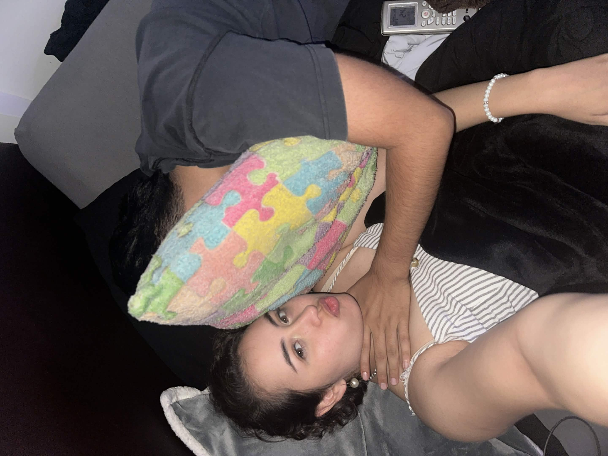

Inicio

Fernanda, no sé cómo empezar una carta después de tanto tiempo, así que perdóname. Los últimos días he estado pensando mucho sobre ti, sobre mí y cómo es que las cosas pasaron. Quiero que quede claro desde este primer párrafo que esto no es con la intención de regresar, de que me dejes de odiar o algo similar; solo necesito sacarme las cosas del pecho y del cerebro. Creo que te mereces más de una explicación y espero que lo que pueda transmitir en estas cartas te sirva de algo.
El último año ha sido el más raro de mi vida, desde adaptarme a los diagnósticos de TDA, de autismo y darme cuenta de quién soy, cómo funciono y qué es lo que en realidad quiero en la vida. Haber vivido la mayoría de estos cambios, momentos y primeras veces a tu lado es algo que me llena de alegría; son esos momentos los que se quedan conmigo. Te agradezco cada esfuerzo y cada minuto que te diste para compartir conmigo. Tal vez no todo salió como uno u otro idealizó, pero disfruté muchísimo.
En la siguiente página te voy a contestar una duda en la que nunca quise profundizar. En mi cabeza quería reservarlo para un momento especial, pero ahora creo que ese momento ideal no va a llegar y no te quiero dejar con dudas.